Introduction
Bienvenue sur le guide d'utilisation de cette application.
Vous trouverez ci-dessous tous les détails pour pouvoir bien utiliser cette application.
A propos
Cette application est une application Desktop Java réalisé en utilisant Eclipse IDE, qui vous permettera de :- Dessiner quatre type de graphes :
- Non orienté
- Orienté
- Pondéré non orienté
- Pondéré orienté
- Récupérer des informations concernant votre graphe :
- Sa taille et son ordre
- Sa densité
- Complet ou non
- Eulérien ou non ou admet une chaîne eulérienne
- Régulier ou non
- Liste des sommets avec leur degré
- Générer les matrices relatives à votre graphe :
- Matrice d'adjacence
- Matrice d'incidence
- Matrice aux arcs
- Liste de graphe
- Afficher les informations concernant chacun des sommets du graphe :
- Son label
- Son degré
- Ses voisins entrants
- Ses voisins sortants
- Avoir le contrôle sur le graphe (après dessin):
- Déplacer les sommets
- Supprimer les sommets / les arêtes
- Renommer les sommets
- L'application de quelques algorithmes sur le graphe (dépendant de son type) en visualisant les changements et la trace de chaque algorithme à chaque étape :
- Parcours :
- BFS
- DFS
- Algorithme de Warshall
- ACM en utilisant :
- Algorithme de Prim
- Algorithme de Kruskal
- Plus court chemin :
- Algorithme de Dijkstra
- Algorithme de Bellman-Ford
- Algorithme de Ford-Fulkerson
- Coloriage en utilisant l'algorithme de Welch et Powell
- Parcours :
- La récupération de la capture du graphe à la fin de chaque algorithme
- Et enfin la possibilité de télécharger la trace de l'algorithme sous forme Pdf
Captures de l'interface
Première page
Choix du type de graphe à dessiner
View more{kind=link}
Informations initiales
Informations initiales sur le graphe
View more{kind=link}
Les matrices du graphe
View more{kind=link}
Surface de dessin des graphes
View more{kind=link}
Les algorithmes
Les boutons s'activent avec le type de graphe correspondant
View more{kind=link}
La trace de l'algorithme
La trace de chaque algorithme sécrit ici
View more{kind=link}
Plus
View more{kind=link}
Informations générale
Plus de détails sur le graphe
View more{kind=link}
Création du graphe
Pour dessiner un graphe, il nous faut dessiner des sommets puis les relier par des arêtes (arcs) ou bien des boucles (relier un sommet à lui même), donc pour dessiner :-
Un sommet :
Un simple click sur la surface de dessin (centre) vous affiche un MessageDialog vous demandant de saisir le nom (label) du sommet.
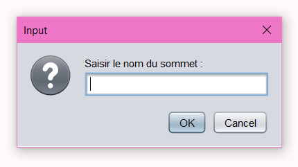
Et voilà un sommet dessiné :
Remarque :
Si vous ne saisissez aucun nom ou vous saisissez un nom déjà existant, un MessageDialog va s'afficher jusqu'à ce que vous saisissez un nom valide :
Nom répété
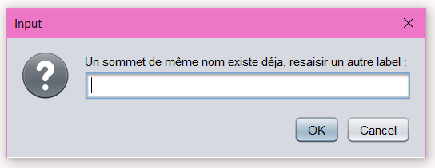
Vide
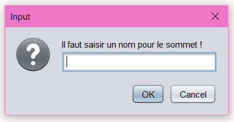
-
Une arête / Un arc :
Pour lier deux sommets par une arête (arc), cliquez sur le premier sommet (il devient cyan, cela veut dire qu'il est séléctionné), puis une deuxième click sur le deuxième sommet, et voilà une arête (un arc) dessiné :
Arête
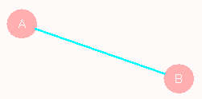
Arc
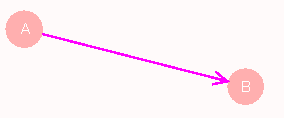
Remarque :
Si vous dessinez un graphe pondéré, un MessageDialog s'affiche pour vous demander le poids de l'arête (vous receverez un MessageDialog si le poids est null ou invalide) :
Arête avec poids
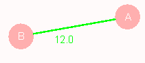
Arc avec poids
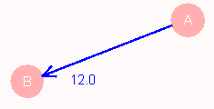
Poids null
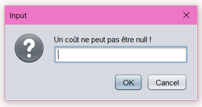
Poids invalide

-
Une boucle :
C'est le fait de relier un sommet à lui même, pour le faire vous devez cliquez sur le sommet une première fois et puis une deuxième tout simplement, et voilà :
Gestion du graphe
Aprés la création de votre graphe, vous pouvez effectuez les actions suivantes :- Déplacer les sommets :
Après avoir séléctionné un sommet, vous pouvez le déplacer à l'aide de la souris simplement. -
Afficher un popup sur vos sommets :
Tout d'abord vous cliquez à gauche sur le sommet, lorsqu'il devient de couleur cyan, alors vous cliquez à droite pour afficher le popup :
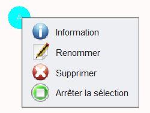
Comme est montré vous pouvez :-
Afficher les informations de ce sommet :
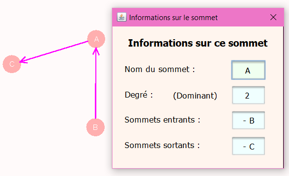 -
Renommer ce sommet :
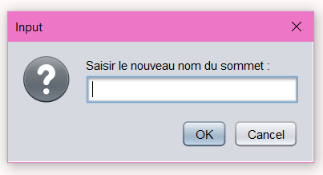
Et bien sûr vous ne pouvez pas le laissez vide ou saisir un nom déjà existe :) -
Supprimer ce sommet :
Un MessageDialog de confirmation
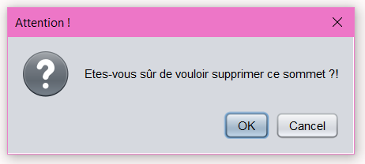
Remaque :
Lors de la suppression d'un sommet, toutes les arêtes (arcs) liées à ce sommet sont supprimées. -
Arrêter la séléction :
Cette action vous aide à se débarasser du sommet aprés le déplacement du sommet.
-
Afficher les informations de ce sommet :
-
Afficher les matrices de votre graphe :
En cliquant sur le bouton "Les matrices du graphe" qui se trouve à gauche en haut de l'interface du travail :
Le bouton
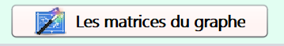
L'affichage
-
Afficher des informations générales sur votre graphe :
En cliquant sur le bouton "A propos du graphe" qui se trouve à doite en bas de l'interface du travail :
Le bouton
L'affichage
-
Vous pouvez à tout moment re-ouvrir ce guide sans devoir revenir à la page d'accueil, en cliquant le bouton "Guide" se trouvant sous le bouton concernant les informations sur le graphe
Le bouton
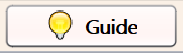 -
En cliquant sur le bouton "Revenir à la page d'accueil" vous receverez un MessageDialog de confirmation pour vous indiquez que le graphe sera supprimé
Le bouton
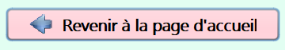
L'affichage
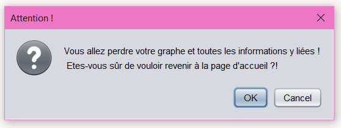
Les algorithmes
La partie droite de l'interface de travail contient les boutons des algorithmes à appliquer sur votre graphe, ces derniers chacun est activé dans le cas possible (en relation avec le type du graphe) :Le volet
Remarque :
Pour chaque algorithme, lors de son application, les changements sur le graphe sont visualisés, ainsi que la trace des étapes est écrit dans la partie trace, dont vous pouvez par la suite le télécharger en format Pdf (se télécharge dans le dossier de nom "TraceAlgorithmesPDF"), comme vous pouvez récupérer la capture du résultat final de votre graphe (prise automatiquement à la fin de chaque algorithme) dans le dossier portant le nom "ScreenAlgos" :
Et voilà les algorithmes qui existent dans cette application :
-
Parcours du graphe :
Un parcours de racine r est une suite L de sommets tels que :- r est le premier sommet de L.
- Chaque sommet apparaît une seule fois dans L.
- Tout sommet sauf r est adjacent à un sommet placé avant lui dans la liste.
-
BFS (Breath First Search) : parcours en largeur
On commence par les voisins de la racine, puis les voisins des voisins. -
DFS (Death First Search) : parcours en longueur
Pour chaque voisin, on passe à son voisin, ainsi de suite.
Lors de l'application de ces deux algorithmes, vous allez voir le coloriage des sommets étape par étape :
Les boutons
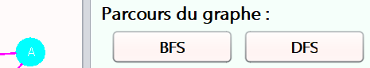
Le résultat à la fin de l'algorithme
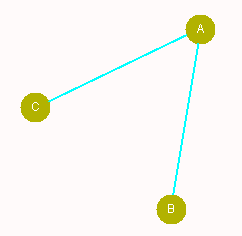 -
Algorithme de Floyd-Warshall :
Cet algorithme nous permet de répondre aux questions "Est-ce que ce graphe est connexe / complet ?"
Lors de l'application de cet algorithme, vous allez voir à chaque étape le dessin de l'arête (arc) manquant pour que le graphe soit complet (dessinée avec des tirets rouges):
Le résultat à la fin de l'algorithme
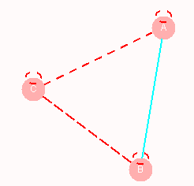 -
Arbre couvrant minimal :
Cette partie concerne la recherche d'un arbre recouverant de poids minimal (somme des coûts des arêtes soit minimale).
Il existe plusieurs algorithmes pour la recherche d'un ACM, dans cette apllication vous trouverez :-
Algorithme de Prim :
Le principe de cet algorithme est de partir d'un arbre initial réduit à un seul sommet, puis d'augmenter à chaque itération la taille de l'arbre en le connectant au plus proche voisin libre (le coût le plus petit).
Le résultat à la fin de l'algorithme
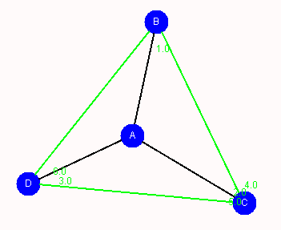 -
Algorithme de Kruskal :
Conceptuellement cet algorithme est différent de l'algorithme de Prim, puisque son principe est de partir d'une forêt de n arbres réduits chacun à un sommet isolé du graphe (les arêtes supprimés), puis à chaque itération on relie deux arbres par l'arête de plus petit poids, jusqu'à ce qu'il n'y ait qu'un seul arbre dans la forêt (l'ACM).
Le résultat à la fin de l'algorithme
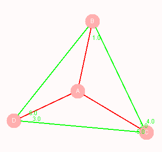
Remarque :
Ces algorithmes ne sont appliquables que dans le cas d'un graphe non orienté pondéré, depuis les boutons Prim et Kruskal ne sont activé que dans ce cas.
Les boutons
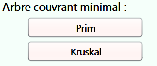 -
Algorithme de Prim :
-
Plus court chemin :
Cette partie concerne la recherche des plus courts chemins dans un graphe à partir d'un sommet de départ vers tous les autres sommets de ce graphe.-
Algorithme de Dijkstra :
Une condition nécessaire et suffisante pour qu'il existe un plus court chemin entre le sommet de départ et tous les autres sommets du graphe est qu'il n'y ait pas de circuit absorbant dans le graphe.
Donc cet algorithme ne sera pas appliquable dans le cas de l'existence d'un circuit absorbant dans votre graphe :
Détection d'un circuit absorbant
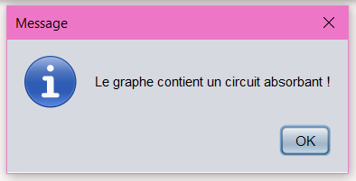
Affichage des résultats à la fin de l'algorithme
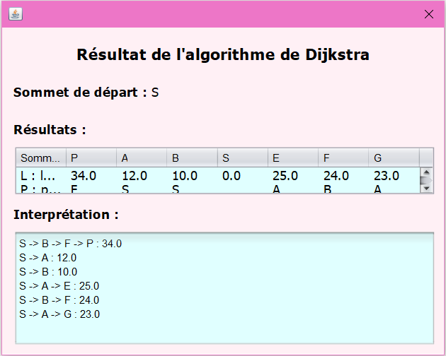 -
Algorithme de Bellman-Ford :
Cet algorithme fonctionne en surestimant la longueur du chemin du sommet de départ à tous les autres sommets du graphe (permet l'existence d'un circuit absorbant).
Affichage des résultats à la fin de l'algorithme
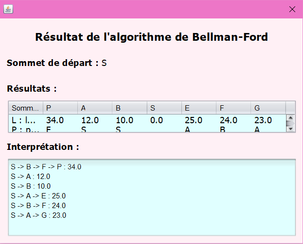
Remarque :
Ces algorithmes ne sont appliquables que dans le cas d'un graphe pondéré (orienté ou non orienté), donc les boutons Dijkstra et Bellman-Ford ne seront activés que dans ces cas.
Les boutons
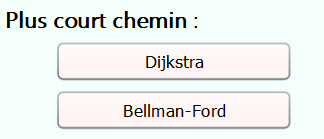 -
Algorithme de Dijkstra :
-
Réseau de transport :
On appelle réseau de transport, un graphe orienté valué G=(V, E, C), sans boucle et dans lequel il existe :- Un sommet S sans prédécesseur nommé entré ou source du réseau.
- Un sommet P sans successeur nommé sortie ou puits du réseau.
- Au moins un chemin reliant S à P dans G
- La méthode de marquage.
- La méthode résiduelle.
Remarques :- La source et le puits sont déterminés automatiquement par l'application.
-
Cet algorithme n'est applicable que dans le cas d'un graphe orienté pondéré .
Les boutons
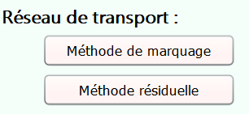
-
Coloriage du graphe :
Le problématique de coloriage d'un graphe est que :- Deux sommets adjacents ne peuvent pas être coloriés de la même couleur.
- Tous les sommets doivent être coloriés avec un nombre minimum de couleurs.
- On classe les sommets du graphe dans l'ordre décroissant de leur degré, et on attribue à chacun d'eux son numéro d'ordre dans la liste obtenue.
- En parcourant la liste dans l'ordre, on attribue une couleur non encore utilisée au premier sommet non encore colorié, et on attribue cette même couleur à chaque sommet non encore coloré et non adjacent à un sommet de cette couleur.
- S'il reste des sommets non colorés dans le graphe, on revient à la deuxième étape. Sinon, la coloration est terminée.
Remarque :
Cet algorithme n'est applicable que dans le cas d'un graphe non orienté (pondéré ou non pondéré).
Résultat à la fin de l'algorithme
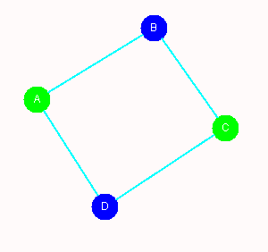
Conclusion
Nous remercions Mr.GHADI Abderrahim de nous avoir offert cette occasion de développer nos connaissances et nos compétences à travers le développement de cette application.
GHRABI Hafsa
Corona period